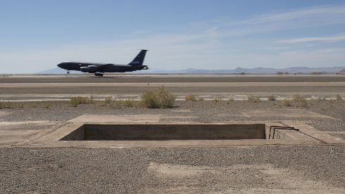

Loading Pit

Lukas Marxt
|
AT,
DE 2019
|
dienstag 15 okt | 20.30 | werkstattkino | short film
night
In der Utah-Wüste entdeckt die Kamera eine Atombombenladegrube, die für militärische Übungen genutzt wird. Aus dem Off erklingen die trockenen Anweisungen des Benutzerhandbuchs „How to build a Atomic Bomb Loading Pit“ von 1946.
Lukas Marxt geb. 1983 in der Steiermark. Studium der Geografie und Umweltsystemwissenschaften in Graz, Audiovisuelle Gestaltung in Linz. Mit seinen Kurzfilmen gewann er zahlreiche Preise. In Locarno zeigte er 2019 in Weltpremiere seinen ersten Langfilm RALFS FARBEN. Ebenfalls 2019 erschien die Publikation über Lukas Marxt „From Light to Cold”, Verlag für Moderne Kunst. |
Filme Captive Horizon 2015 (11. UX) | Cape Ground 2016 | Circular Inscription 2016 | Imperial Valley (cultivated run-off) 2018 (13. UX) | Loading Pit 2019 | Ralfs Farben 2019 |